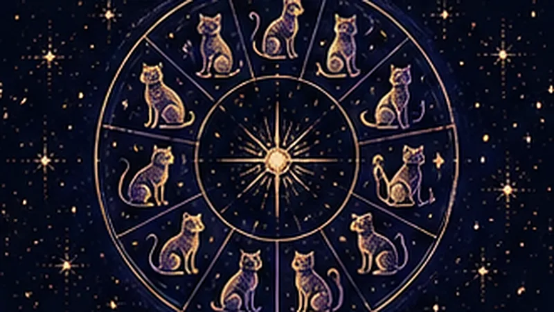
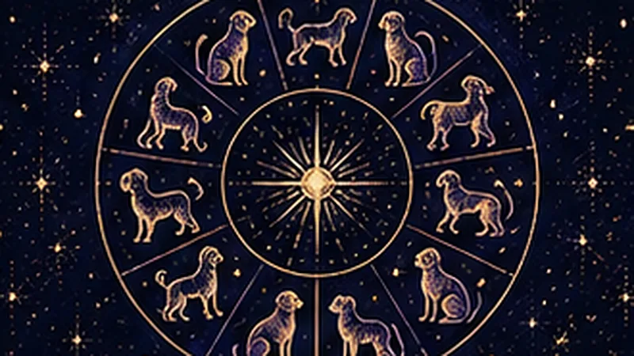
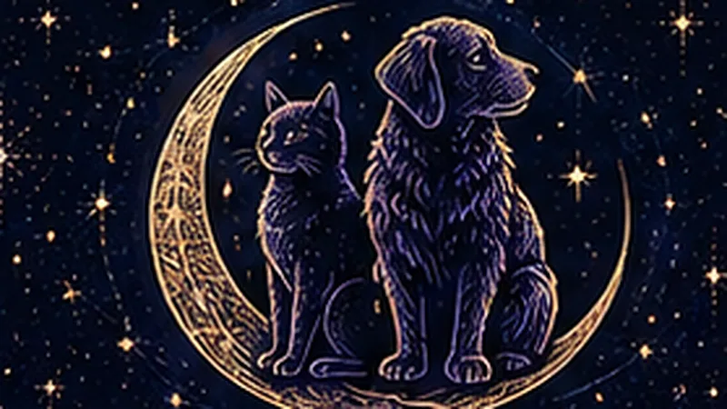
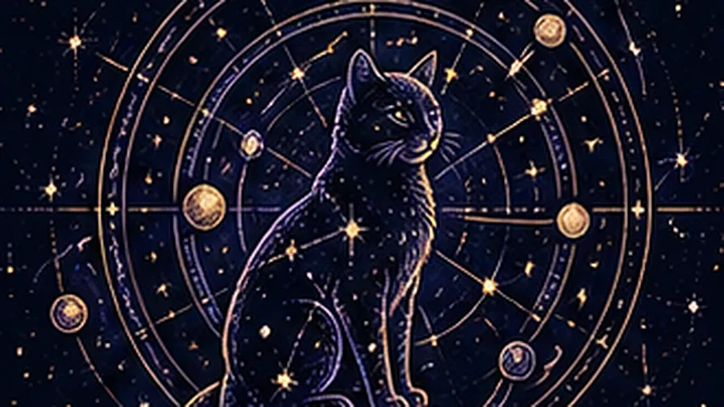
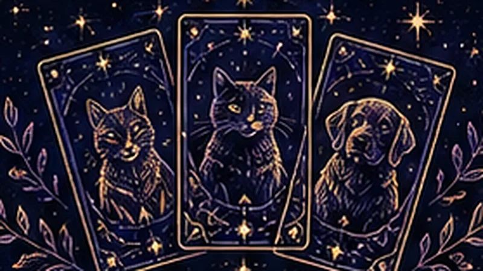
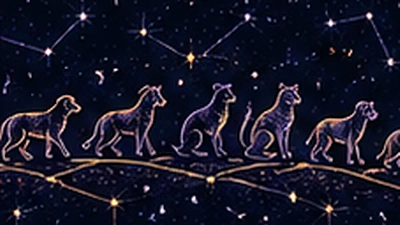
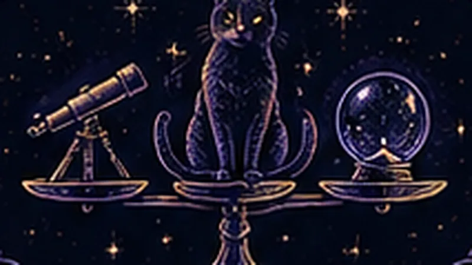
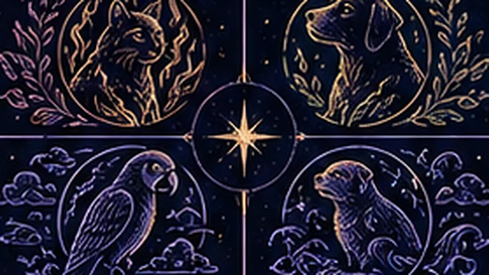
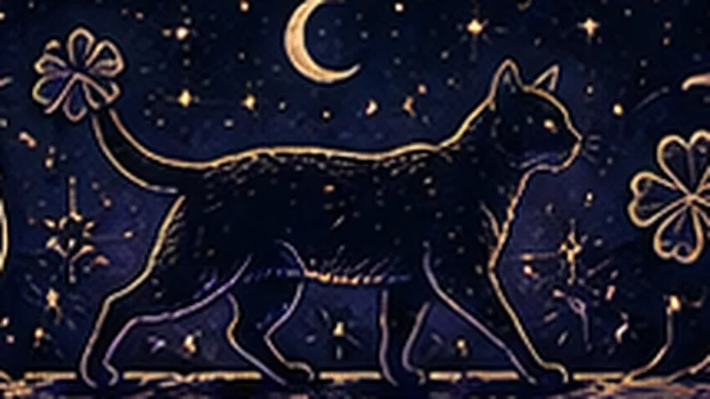
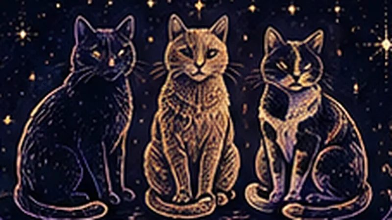

ГороскопГороскоп для кота: что говорит о характере знак зодиака
Как определить знак зодиака кота по дате рождения и что означает каждый знак применительно к кошкам.

ГороскопГороскоп для собаки: что говорит о характере знак зодиака
Как определить знак зодиака собаки по дате рождения и что означает каждый знак применительно к собакам.

СовместимостьСовместимость кота и собаки по гороскопу
Какие знаки зодиака кошки и собаки уживаются легко, а каким нужно больше времени на притирку.

Натальная картаНатальная карта питомца: зачем она нужна
Чем натальная карта отличается от простого знака зодиака и что нужно для точного расчёта.

ТароТаро для животных: что это и как работает
Как устроен расклад таро для питомца, какие вопросы можно задать и как получить трактовку.
Как это работаетAI-астролог для животных: как это работает в Telegram
Как точный астрономический расчёт и AI-модель вместе создают разбор характера питомца.
Лунный календарьЛунный календарь для питомцев
Как фазы Луны традиционно используют для выбора дней груминга, визита к ветеринару и активных игр.
Обратный ракурсКакой я хозяин по гороскопу своего питомца
Что натальная карта владельца говорит о стиле общения с питомцем и подходе к его воспитанию.
Подбор питомцаКакого питомца завести: гид по выбору
Практический гид по выбору питомца — квартира, дети, аллергия — плюс подбор по вашей натальной карте.

Знаки зодиакаЗнаки зодиака питомцев
Все 12 знаков зодиака и типичный характер кота или собаки, рождённых в этот период.

Взгляд со стороныСтоит ли верить астрологии для животных
Честный взгляд на то, что астрология для питомцев даёт на практике, и в чём её ограничения.

СовместимостьСовместимость по знакам зодиака: таблица для всех питомцев
Полная таблица совместимости — не только кот и собака, но и любые другие питомцы между собой.
Подбор имениКак назвать кота или собаку: 100+ имён
Большой список имён по цвету и характеру плюс подбор клички, гармоничной знаку зодиака питомца.
Поведение питомцаКак понять, что питомец несчастлив: признаки и что делать
Основные сигналы дискомфорта у кошек и собак и когда стоит обратиться к специалисту.
Ежедневный гороскопГороскоп кота на сегодня: как читать ежедневный прогноз
Что показывает ежедневный прогноз и как правильно его воспринимать.

Приметы и мистикаПриметы про кошек: что за ними стоит
Откуда взялись приметы про чёрных, рыжих и трёхцветных кошек и что из них — суеверие.

Приметы и мистикаХарактер кошки по окрасу: правда или миф
Рыжие — наглые, чёрные — независимые: разбираем, что из этого подтверждено, а что миф.
Первый взгляд на звёзды — бесплатно
Откройте бота и добавьте питомца — натальная карта будет готова через пару минут.
Начать в Telegram